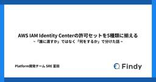
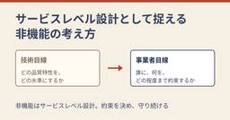
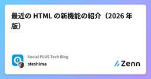
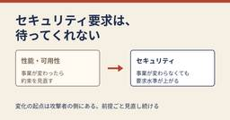
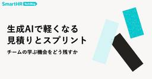
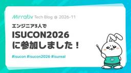
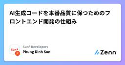
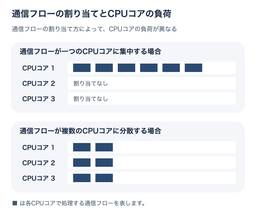
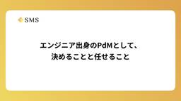
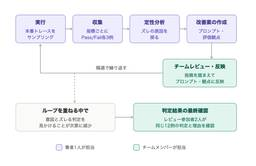

直近1週間の人気フィード
はてなブックマーク数を元に新着優先で並べ替え
Leanの定理証明ガードレールで AI エージェントに業務ルールを守らせる 150
150 freee Developers Hub
freee Developers Hub
業務ルールが複雑になると、AI エージェントは同じ依頼でも結果がぶれます。業務ルールを Lean に写し、会話ごとの定理を処理系に検めさせる形式検証のガードレールを、τ²-bench での途中経過とともに紹介します。
3日前

CCAO-F は全 Claude 利用者が取得すべき AI 時代に必要な試験でした 79 サーバーワークスエンジニアブログ
セキュリティサービス部 佐竹です。CCAO-F を受験＆合格しましたので、本試験が AI 時代に必要だと思った背景と、実際の Claude に関する試験のファーストインプレッションを記載しておこうと思います。AI の不正確な利用による事故が散見される今、組織で Claude を使う全員が基礎を学ぶことが、確実なリスク対策の1つになるのだと感じます。
2日前

タスク管理までAIエージェントに任せたら、確認待ちに答えるだけになった 78 レスキューナウテックブログのフィード
レスキューナウテックブログのフィード
はじめにこんにちは、しもちです。前回の「2026年自分流AIエージェント環境構築の秋」では、司令塔のエージェントに作業役を回してもらう仕組みを紹介しました。司令塔には作業だけでなく、抱えているタスク全体の管理も任せていて、どれに手を付けるか、どの順で進めるかも司令塔が決めます。自分でタスクの一覧を見て回ることはなくなり、司令塔が出してくる確認待ちに答えるのが主な仕事になりました。今回は画面を中心に
1日前
Figmaを正解にアプリのUIを点検する、Claude Codeで作るUI差分検知 43 ZOZO TECH BLOG
はじめに こんにちは。グローバルプロダクト開発本部 グローバルアプリ部 アプリ基盤ブロックの桂川です。普段はZOZOFIT・ZOZOMETRYなどの計測アプリのAndroid開発に携わっています。 今回、Figmaのデザインとアプリの画面の差分を検知しやすくするための仕組みづくりに取り組みました。これまで、Figmaとアプリの画面が一致しているかは、人が目で見比べて確かめるしかありませんでした。
2日前

OpenCode+Docker+GitHub Actionsで全自動AIペネトレーションテストはじめました
124 Zenn Tech Blogのフィード
はじめにZennチームのdyoshikawaです。ZennではAIによるセキュリティチェックの仕組みを急ピッチで構築しました。現在はPull Request（以下PR）ごとのAIレビューに加えて、AIエージェントによる全自動のペネトレーションテストを毎週GitHub Actionsで回しています。背景は、みなさんもご存知のとおり昨今のサイバー攻撃の激化です。https://scan.netsecu
4日前

AI時代に求められるペネトレーションテスト 88 ラック・セキュリティごった煮ブログ
ラック・セキュリティごった煮ブログ
はじめに こんにちは、ディオゲネスです。 AIを悪用していると考えられるサイバー攻撃の被害が止まりません。私たち専門家も、正直な所もう少し時間の猶予があると思っていました。 さて、そのようなAI時代に、「どのような全般的セキュリティ対策強化が求められるか」という点については、日本含め各国の公的団体から情報が出ており、「完璧な対策はなく、これまで通りの基本的な対策を、可能ならAIの助けを借りつつ、よ
4日前

AIにQAの判断を任せる：AIによるトリアージ精度を2倍にするQAコンテキスト設計 70 Tabelog Tech Blog
Tabelog Tech Blog
目次 はじめに これまでのAI4QAの取り組み 今回の取り組み AIにトリアージさせるためのコンテキスト設計 何を渡すか どう渡すか 判定の基準をどこに持たせるか 結果 定性的評価：トリアージができた3つの例 定量的評価：トリアージ精度が2倍に まとめ 採用情報 はじめに こんにちは。食べログカンパニー 開発本部 品質管理部QAチームの中尾です。飲食店プロダクト領域で、E2Eテストの自動化とQA工
4日前

fine-grained PAT が使えない GitHub Packages に gh auth token と pnpm tokenHelper で向き合う 20 kickflow Tech Blog
こんにちは、プロダクト開発本部でエンジニアをしている秋山です。 みなさんは GitHub の Personal Access Token、まだ classic を使っていますか？ kickflowでも、以前は使用していました。正確には「使わざるを得ない場所が一箇所だけ残っていた」という状態でした。 先日、社内のセキュリティ対策の一環として、組織の設定で Personal Access Token
1日前

税法を定理証明支援系 Lean で書いて、プロダクト実装を「全入力で」確かめる 66 freee Developers Hub
税の計算が法令どおりかは、ソフトウェアテストでは人が選んだテストケースの分しか確かめられません。本番で動いている税計算を、定理証明支援系 Lean と AI エージェントで、法令から起こした仕様とすべての入力で突き合わせました。一致の確認と、選び方で税額が変わる箇所の洗い出しの方法を紹介します。
3日前

権限は「誰に渡すか」ではなく「何をするか」で分ける 〜AWS IAM Identity Centerの許可セットを5種類に揃えた話〜 65 Findy Tech Blog
Findy Tech Blog
こんにちは。 CTO室/Platform開発チームでSREを担当している富田(@Cooking_ENG)です。 ファインディでは、プロダクトごとにAWSアカウントを分け、AWS IAM Identity Center（以降、Identity Center）で各AWSアカウントへのサインインと権限を管理しています。AWSアカウントが増えても、サインイン方法を意識する必要はありません。 一方で、各AW
4日前

DHHに会いに行って、初心者に戻ることにした 33 kickflow Tech Blog
Kaigi on Rails 2026参加記。DHHの基調講演「鉛筆を置き、コードも読まなくなる」を受けて、AIエージェントが書いたコードのレビューをどう変えるか、Railsエンジニアが試すことを4つ整理しました。
2日前

AIが書く「読みづらいADR」に発狂しかけたので、ADRのガイドラインを作った 185 TOKIUMプロダクトチーム テックブログのフィード
はじめにみなさん、ADR（Architecture Decision Record）は書いていますでしょうか？AIを使ったソフトウェア開発において「意思決定の記録を残す」ことの重要性は、今や多くのエンジニアに周知されているかと思います。僕が率いるチームにおいても、プロジェクト開始初期から様々な技術的な意思決定をADRに記録し、運用してきました。最近では、ADRのドラフト作成もAIに任せるようになっ
5日前
AIペネトレーションテストツール「ARTEX」の仕組みを知る 25 ラック・セキュリティごった煮ブログ
デジタルペンテスト部でペネトレーションテストを担当している小松奈央です。 昨今、情報漏えいなどのセキュリティインシデントが相次いで報告されている他、AIの進化によるサイバー攻撃の高度化やハードルの低下など、サイバーセキュリティを取り巻く環境の変化の大きさを実感しています。 AIを悪用したサイバー攻撃の事例としては、自律型AIペネトレーションテストツール「ARTEX」が実際のサイバー攻撃に悪用された
3日前
コードを読まずにバイブコーディングしたら、Claude Codeは分かっていてスルーしていた 38 Nexta Tech Blogのフィード
Claude Code のセッションを、VSCode の拡張機能で5つほど並べて使っている。Markdown が見やすく、コードも見られて、VSCode から離れなくて済むからだ。ただ、パネルの見出しは短く、5枚並べるとどれが何をしているのか分からなくなる。使用枠があとどれくらい持つのかも気になる。そこで、動いているセッションを1枚で見るダッシュボードを自分用に作った。いま動いているセッションの状
4日前

サービスレベル設計として捉える非機能の考え方 133 フューチャー技術ブログ
フューチャー技術ブログ
非機能を「システム開発者の目線」ではなく「事業者の目線」で捉え直し、何のために決めるのか、どの順番で誰が決めるのか、何をもって保証とするのかの軸を整理します。要望を先に数値にしてから制約に当てはめる進め方と、サービスレベル定義シートのテンプレートも載せています。
6日前

Amazon DynamoDB のベクトル検索機能を検証 35 Taste of Tech Topics
Taste of Tech Topics
こんにちは。 データ分析エンジニアの木介です。 今回は、2026年8月に一般提供が開始されたAmazon DynamoDBのベクトル検索について紹介していきたいと思います。 DynamoDBで管理しているテキストに、意味による検索を追加できるのが特徴です。 別の検索サービスへデータを複製・同期する仕組みを用意せずに済むため、既存テキストの検索や類似アイテムの推薦に利用できそうです。 今回は、その仕
4日前

最近の HTML の新機能の紹介（2026 年版） 118
Social PLUS Tech Blogのフィード
こんにちは、steshima です。今回は、最近の HTML の新機能の中から、知っておくと役立ちそうなものや面白いものをいくつか紹介します。関係のある機能は続けて並べているので、上から順に読むとつながりが分かりやすいと思います。 Popover APIpopover 属性を付けた要素を、ポップオーバーとして表示できる機能です。開く・閉じる処理や重なり順の調整を、JavaScript を書かずにブ
5日前

初めての技術カンファレンス！Kaigi on Rails 2026にブース担当として参加してきました 14 kickflow Tech Blog
こんにちは、kickflowでエンジニアをしているひらゆーです。 10月16日(金)・17日(土)に渋谷で開催された「Kaigi on Rails 2026」に参加してきました。実は技術カンファレンスに参加するのは今回が初めてでした。 今回はkickflowのブース担当として2日間会場にいました。ブースの合間にセッションも聞けたので、この記事ではブースに立って感じたこと、聞いたセッション、懇親会の
2日前

アンドパッドSREが抱える課題をPlatform Engineering Kaigi 2026の参加者にぶつけてみた結果 25 ANDPAD Tech Blog
ANDPAD Tech Blog
はじめに ブースについて 「Platform Engineering チャレンジ」 当日の様子 ノベルティ ANDPAD バッグ メジャー 御朱印帳 ブースで会話した内容 よく聞かれた質問・話題 参加者の課題感として共通していたこと 印象に残った会話 学び・今後に向けて 参加して見えた業界の動向 アンドパッドの Platform Engineering にどう活かすか おわりに We are hi
4日前

セキュリティ要求は、待ってくれない 53 フューチャー技術ブログ
相次ぐ不正アクセスの報道と、それに対する「指摘を放置していた」という反応を、非機能の観点から考えます。セキュリティの要求水準は自分たちの事業が変わらなくても攻撃者の側の変化で上がるという特性を踏まえ、自分たちのセキュリティ要求を見直すための考え方を整理します。
4日前

GitHub Immutable Releases を設定したリポジトリのリリース用パイプラインが静かに壊れたので直した話 8 豆蔵デベロッパーサイト
はじめに#リリースの改竄を防ぎソフトウェアサプライチェーンのセキュリティを確保する Immutable releases を試すため、個人開発の Electron アプリのリポジトリに適用したのが1年前...
3日前

「足さない案」を AI に比べさせる設計ゲートの作り方と回し方 15 DRESS CODE TECH BLOGのフィード
はじめにこんにちは、Dress Code株式会社 でプロダクトエンジニアをやっているなたこんです。9月の Dress Code Meetup #3 で、「たくさん作れる時代だけど、作るものは少ないほうがいい」という話をしました。以前は、作るコストの高さが「本当に要るのか」のフィルタになっていました。AI でそのハードルが下がっても、モデルや画面や設定項目は、読む人・使う人・直す人の全員が抱え続けま
3日前
開発の Issue 管理を Linear に移行した 3 Feedforce Developer Blog
Feedforce Developer Blog
こんにちは､ Omni Hub チームの shunten31 です. Omni Hub チームでは､ 開発のタスク管理を GitHub Projects から Linear に移しました. この移行によって､ 開発タスクの管理が楽になるだけでなく､ 直接の開発以外の､ エンジニアに関係する情報管理についても恩恵が得られているので紹介します. 当初は開発のタスクを移しただけでした. その後､ CS
1日前

生成AIで軽くなる見積りとスプリント —— チームの学ぶ機会をどう残すか 10 SmartHR Tech Blog
こんにちは。7月から給与計算開発部でエンジニアリングマネージャー（見習い）をしている nawoto です。 生成AI（以下、AI）を全面的に使うようになって、開発のやり方がだいぶ変わってきた気がする。実装は圧倒的に速くなったし、計画のたたき台もAIがつくってくれる。そうなると、見積りはもういらないかも、スプリントも短くていいかも、という話をよく聞くようになった。僕もその流れには賛成で、価値を速く届
3日前

ミラティブのエンジニア3人でISUCON2026に参加しました！ 37 Mirrativ Tech Blog
Mirrativ Tech Blog
こんいす！ミラティブでバックエンドエンジニアをしているhamadaです。 ISUCON2026に、社内のバックエンドエンジニア3人で「Team Y3」として出てきました。結果は33位、213,540点でした。 M3賞（ISUポンサーのエムスリー株式会社様による企業賞）をいただきました！ 前回のISUCON14から2年。そのあいだに、ソフトウェアエンジニアを取り巻く世界はずいぶん変わりましたね。IS
5日前

AI生成コードを本番品質に保つためのフロントエンド開発の仕組み 4 Sun* Developersのフィード
はじめにAI が書いたコードの品質は、プロンプトの工夫よりも、AI の外側に用意した「仕組み」で決まります。この記事では、Next.js（App Router）と TypeScript のフロントエンド開発を例に、AI 生成コードを本番品質に保つための仕組みを 4 つの層に分けて紹介します。 AI は「書かれていないこと」を推測で埋めるたとえば AI に「プロフィール編集フォームを作って」と頼んだ
2日前

PdMとPdEは、顧客に価値が届くまでどう関わるか 4 DRESS CODE TECH BLOGのフィード
はじめにDress Code 株式会社のかわうそです。Dress Codeでは現在、プロダクト開発の基本のロールをPdMとPdEに絞っています。エンジニアを技術領域ごとに細かく分けず、PdEがプロダクトを広く担う体制です。PdMが顧客の課題を捉え、何を作るかを考える。PdEが設計し、実装してリリースする。この二つのロールを説明するとき、こう整理することがあります。ただ、この説明だけだと、仕様を渡し
3日前
Claude Code を Sonnet で動かし、判断だけ Opus に相談させ、下働きは Haiku に任せる設定を検証する 4 Scalar Solution Engineer Blogのフィード
概要この記事では、Claude Code の settings.json に次の 3 行を入れたときに何が起きるかを、実際に動かした記録と合わせて解説します。~/.claude/settings.json{ "model": "sonnet", "advisorModel": "opus", "env": { "CLAUDE_CODE_SUBAGENT_MODEL": "haiku" }}ねらいは
3日前
Shopifyの Rubydex linter でRubyプロジェクトに構造的lintを導入しよう（翻訳） 3 TechRacho
TechRacho
概要 CC BY-NC-SA 4.0 International Deedに基づいて翻訳・公開いたします。 英語記事: Introducing Rubydex linter: structural checks for Ruby projects | Rails at Scale 原文公開日: 2026年09月08日 原著者: Stan Lo CC BY-NC-SA 4.0 Deed | 表示 -
2日前

OsecTに関する技術検証―ZeekとSuricataの比較からパーサー開発、性能評価まで(インターンシップ体験記) 3 NTT docomo Business Engineers' Blog
NTT docomo Business Engineers' Blog
はじめに こんにちは。2026年夏のNTTドコモビジネスの現場受け入れ型インターンシップに参加した、吉永(github.com/ta-061)です。普段は、特殊環境で動作するアプリケーションの脆弱性検出に関する研究や、CTFなどのセキュリティ活動に取り組んでいます。 8月から9月にかけての2週間、NTTドコモビジネスのイノベーションセンターで、OTセキュリティサービスのOsecTに関する技術検証に
2日前

エンジニア出身のPdMとして、決めることと任せること 3 エス・エム・エス エンジニア テックブログ
エス・エム・エス エンジニア テックブログ
こちらは、カイポケのPdMが日々の考えや仕事の様子をリレー形式で発信するカイポケPdMブログリレー # 2の記事です。前回の記事はこちらです。 tech.bm-sms.co.jp はじめに エス・エム・エスでプロダクトマネージャー（以降、PdM）をしている原野です。カイポケコネクトで事業所間の情報連携に関する機能を担当しており、そのチームでエンジニアからPdMに職能を移して3か月が経ちました。 こ
3日前

運用しながら改善する LLM-as-a-Judge の構築 3 Timee Product Team Blog
Timee Product Team Blog
はじめに こんにちは、株式会社タイミーでプロダクトAIエンジニアとして働いている貝出です。直近は、LLMを利用した求人審査AIの開発や性能改善を行っています。 LLMを使った機能を開発していると、LLMの生成文を実際にユーザーに見せるケースがあります。そのときには「生成文に問題がないか」を評価する必要があります。解決策の一つとして、生成文をLLMに評価させる “LLM-as-a-Judge” があ
3日前

新人チーフが『エンジニアのための自己管理入門』を読んで思ったこと 14 SmartHR Tech Blog
こんにちは、SmartHRの技術基盤部でチーフ（SmartHRにおけるEM：エンジニアリングマネージャー職）を務める @udzura です。私のチームでは、SmartHR基本機能に共通するコンポーネントの修正・改善を担当しています。 最近、小田中育生さんの『エンジニアのための自己管理入門 堅牢でスケーラブルな働き方を構築する技術』（翔泳社）を読みました。この記事では、チーフになったばかりの私が、特
5日前

GitHubのruleset移行時に注意したい、environment secretのブランチ保護仕様
3 株式会社ログラス テックブログのフィード
!この記事は毎週必ず記事がでるテックブログ Loglass Tech Blog Sprint の168週目の記事です！4年間連続達成まで残り44週となりました！ はじめにこんにちは。株式会社ログラスの新卒でプラットフォーム開発をしている宇都と申します。近年のプロダクト開発においては職種を越えたコラボレーションが進み、PdMやデザイナーなどエンジニア以外のメンバーがGitHub上で仕様策定やドキュメ
3日前

AIに"目"を与える — 本番システムを観測できるエージェントへ 3 NearMe Tech Blog
NearMe Tech Blog
コードだけを読むAIは、動いているシステムの実態を推測するしかありません。オブザーバビリティとデータ基盤をAIの"目"として整備し、障害調査から改善提案までを任せられるようにしつつあるNearMeの取り組みを紹介します。
6日前